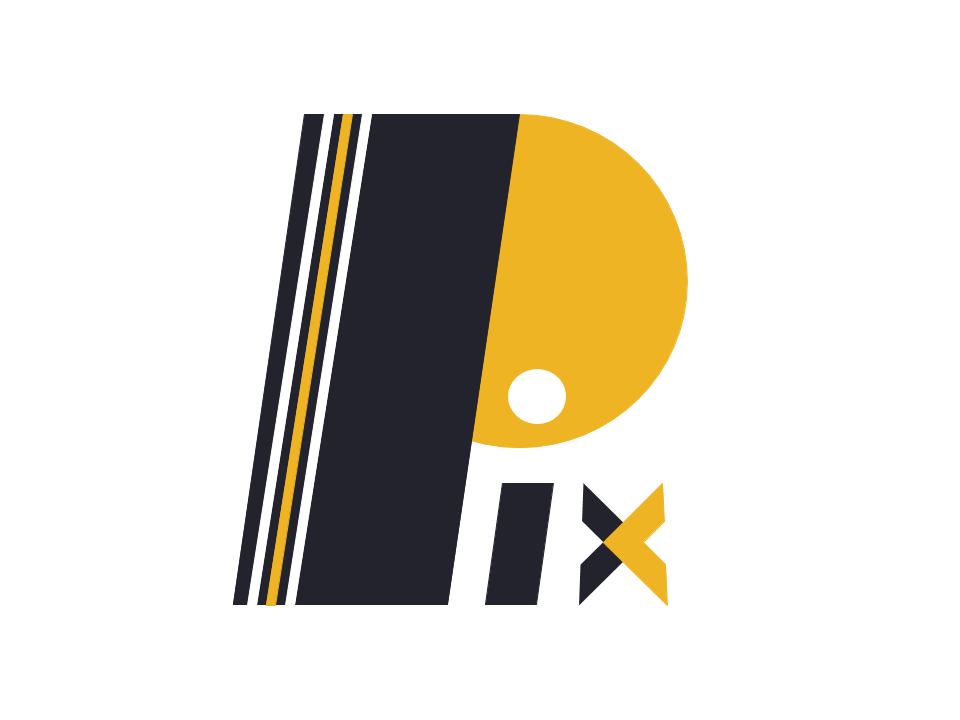

  <div class="container py-5">
    <div class="row my-4">
      <div class="col-lg-6">
        
        <div class="row my-2">
          <div class="col-lg-12">
            <p class="btn btn-primary">React</p>
            <p class="btn btn-secondary">Android / IOS / Web</p>
            <p class="btn btn-secondary">Firebase</p>
            <p class="btn btn-secondary">NHTSA API</p>
          </div>
        </div>
      </div>
      <div class="col-lg-6 text-color-toggle">
        <h3>VIN Vault</h3>
        <P>VIN Vault is a fully usable data visualization and service report able to locate and find the
          details of any vehicle in the NHTSA database. With it’s easy to use/ seamless setup, users are
          be able to view VINs by either scanning or typing in the VIN. (Note: The Web version cannot Scan
          Inputs)
        </P>
        <a target="_blank" href="https://vin-vault.netlify.app/" class="btn btn-secondary">Test VIN Vault</a>
        <a href="https://bitbucket.org/Canaleal/vinvault/src/master/" target="_blank" class="btn btn-primary">Code</a>
      </div>


      <div class="col-lg-6 ">
        
        <div class="row my-2">
          <div class="col-lg-12">
            <p class="btn btn-primary">C#</p>
            <p class="btn btn-secondary">JSON</p>
            <p class="btn btn-secondary">XAML</p>
            <p class="btn btn-secondary">Vector Imaging</p>
          </div>
        </div>
      </div>
      <div class="col-lg-6 text-color-toggle">
        <h3>Atmos Station</h3>
        <P>Atmos Station is a simple 2D Galaga game made in C# Universal Windows with a roboust trading
          system and different planets to land at. Although this was the first large project I created in College with
          my peer,
          each year I update the game with better visuals and more optimized code. Currently, the game is in it's 3rd
          iteration.
        </P>
        <p>Please note that Atmos is currently a UWP C# application. There is no way to play the game on the Web.</p>

        <a href="https://github.com/canaleal/AtmosStation" target="_blank" class="btn btn-primary">Code</a>


      </div>

      <div class="col-lg-6">
        
        <div class="row my-2">
          <div class="col-lg-12">
            <p class="btn btn-primary">HTML / CSS / JS</p>
            <p class="btn btn-secondary">ASP .Net Core</p>

          </div>
        </div>
      </div>
      <div class="col-lg-6 text-color-toggle">
        <h3>Blue Koi</h3>
        <P>
          Blue Koi Art-Linker is a visualization, eCommerce tool that allows users to view, save, and download art,
          photos, models, and drafts from all over the internet. Users can sign up, manage their account, search images
          using an input box and selector, and manage their saved images.

        </P>
        <P>Currently, this application is recieving major updates.</P>
        <a href="https://github.com/canaleal/BlueKoi" target="_blank" class="btn btn-primary">Code</a>

      </div>

      <div class="col-lg-6">
        
        <div class="row my-2">
          <div class="col-lg-12">
            <p class="btn btn-primary">Python</p>
            <p class="btn btn-secondary">Mongo DB</p>
            <p class="btn btn-secondary">Reddit Py</p>
          </div>
        </div>
      </div>
      <div class="col-lg-6">
        <h3>Pix Reddit Tracker</h3>
        <P>Pix Reddit Tracker is an application that allows users to download and save multiple images from Reddit.
          The current build lets users search Reddit via subreddits, users, number of images, save location, and type of
          images.
        </P>
        <p>The app also makes use of MongoDB to save the recent search.</P>
        <a href="https://github.com/canaleal/BlueKoi" target="_blank" class="btn btn-primary">Code</a>
      </div>

    </div>


  </div>
